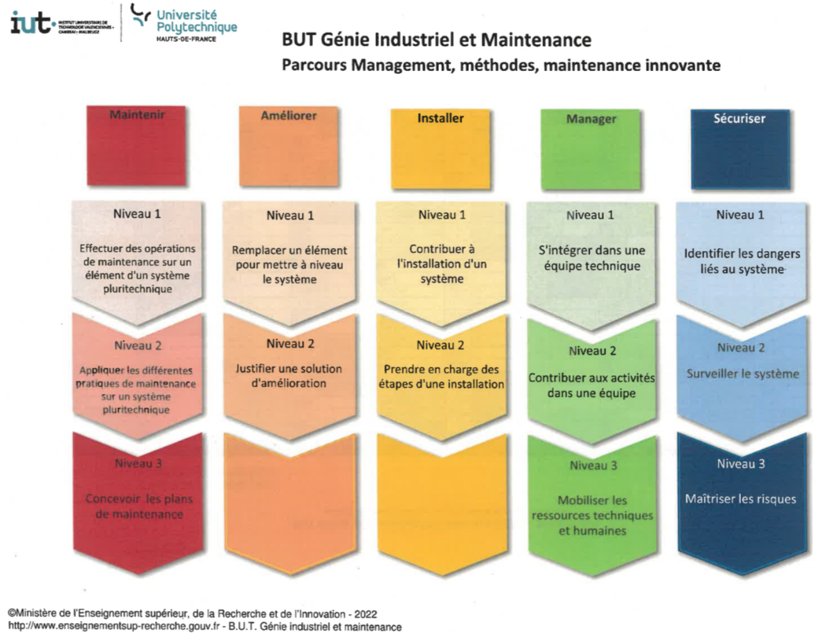
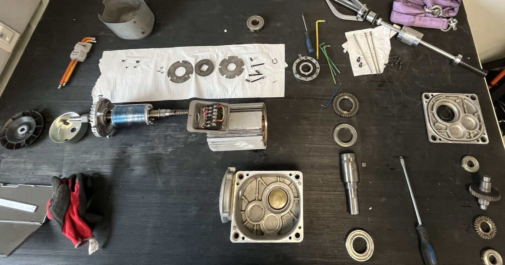
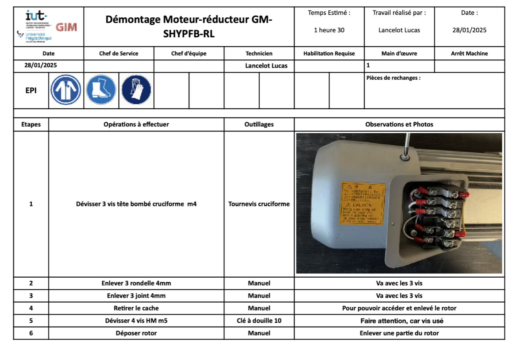
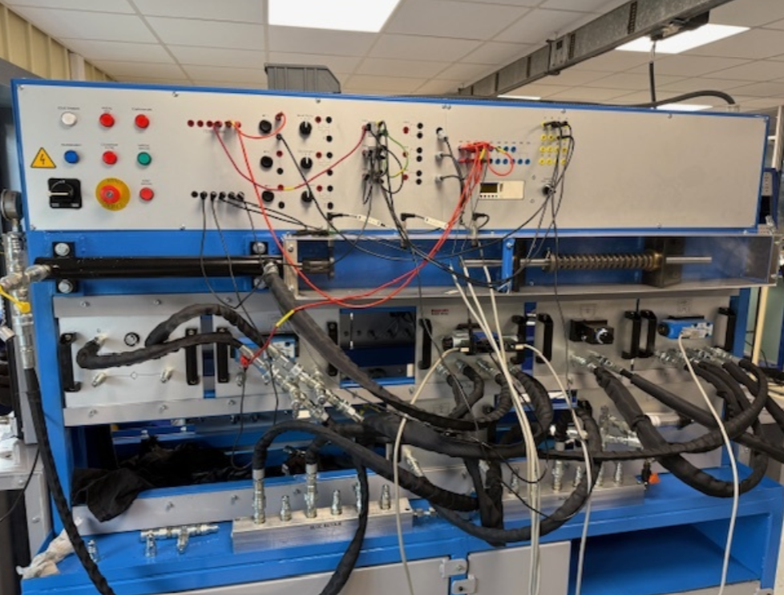
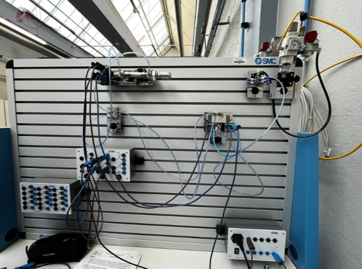
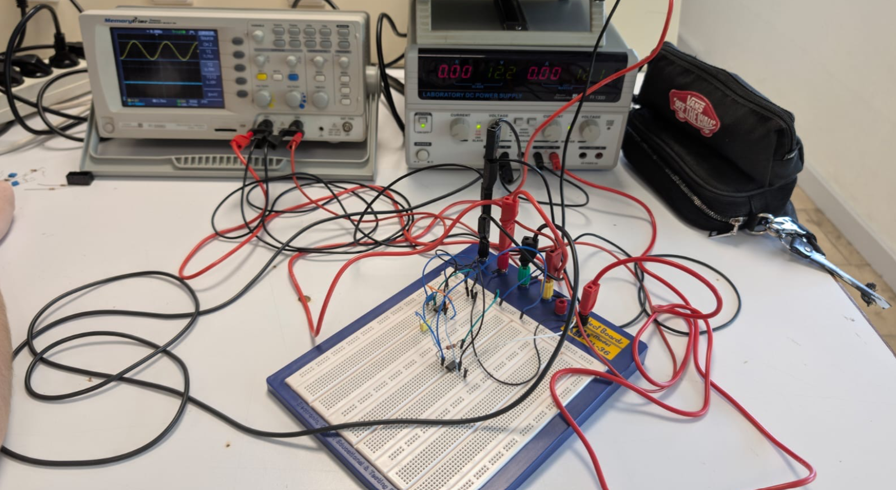
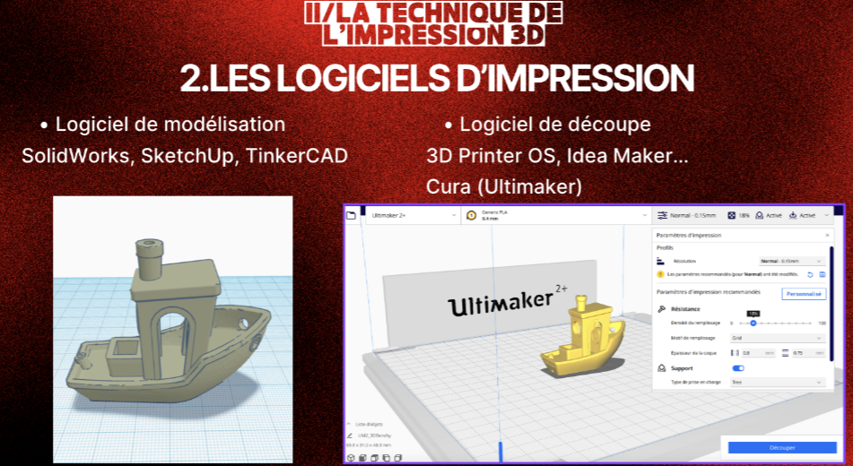
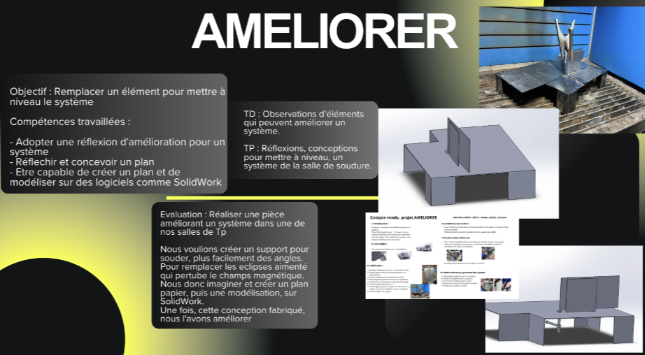
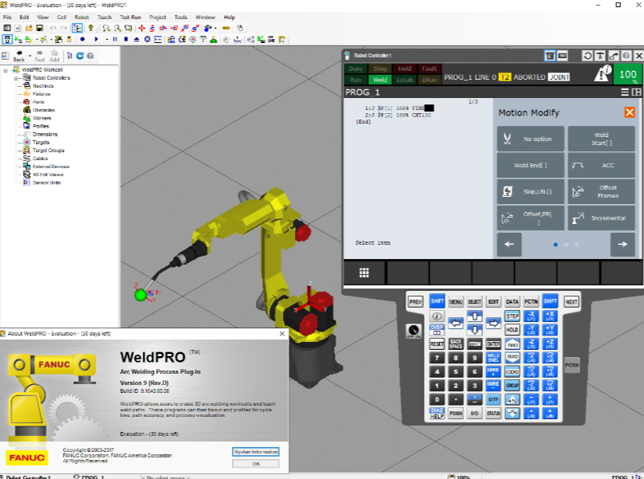
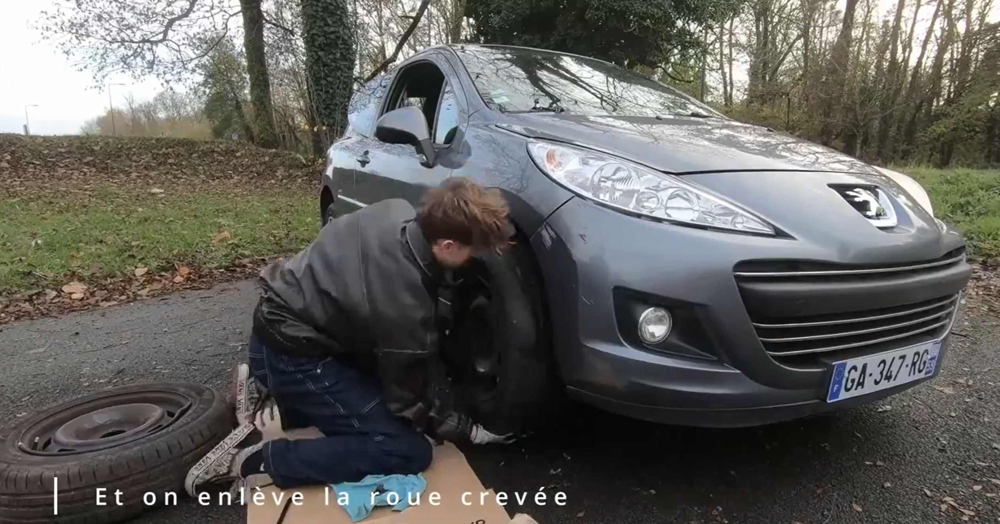

Les Compétences du BUT GIM
Tableau Synthétique des 5 Compétences
Vue d'ensemble des blocs de compétences validés tout au long du cursus (Niveaux 1, 2 et 3).

1. MAINTENIR
Diagnostic, Fiabilisation et Gestion de Maintenance Pluritechnique :
Tout au long de mon parcours en BUT Génie Industriel et Maintenance, j’ai développé une solide maîtrise des méthodes et des outils indispensables pour garantir la disponibilité et la performance des équipements industriels. De la réalisation de TP pratiques (diagnostic et câblage sur armoires électriques, analyse et relève de pannes sur contacteur KM1) jusqu'à mes interventions concrètes en milieu industriel, j'applique rigoureusement la démarche de résolution de problèmes pluritechniques (mécanique, électrique, pneumatique).
Fort de mon expérience en GMAO (gestion de stock, arborescence et topologie sur Mainti4) et de ma capacité à rédiger des gammes de démontage/remontage normées, je m'implique au quotidien pour optimiser la maintenance préventive et curative, sécuriser les interventions et pérenniser les outils de production.


2. INSTALLER
Étude, Câblage et Mise en Service de Systèmes Pluritechniques :
Tout au long de mon cursus et de mes expériences professionnelles, j’ai développé une forte expertise dans l'installation et la mise en service d'équipements automatisés, électriques, hydrauliques et pneumatiques.
Que ce soit par la réalisation de schémas électriques normés, le câblage rigoureux de moteurs triphasés, l'étude aéraulique de Centrales de Traitement d'Air (CTA) ou la conception d'armoires et de caissons de convoyage pneumatique (lors de mon stage chez NTS Convoyeur), je veille toujours à respecter les exigences de dimensionnement, les schémas d'implantation et les standards de qualité industrielle avant la mise sous tension.


3. AMÉLIORER
Optimisation des Processus et Conception de Solutions Industrielles Pluritechniques :
Améliorer la performance et la fiabilité des lignes de production est au cœur de mes ambitions d'ingénieur. J'ai mis en pratique cette compétence à travers la modélisation 3D avancée sur SolidWorks et la fabrication concrète de solutions d'optimisation (comme la création de supports ergonomiques pour le soudage TIG ou l'amélioration d'équipements lors de mes projets).
Cette démarche d'amélioration continue s'est également illustrée lors du projet Gim'Eole Performance, où l'analyse des gains de rendement, la planification rigoureuse sous diagramme de Gantt et la recherche permanente d'efficacité m'ont permis d'optimiser la conception d'un système de A à Z.


4. MANAGER
Animation de Projets, Travail en Équipe et Communication Technique :
Le métier de technicien supérieur et de futur ingénieur repose avant tout sur l'humain, la coordination et la conduite de projets. J’ai su développer un solide sens du leadership et du travail en équipe, que ce soit en coordonnant les ressources lors de projets techniques à l'IUT, en rédigeant des dossiers d'analyse thématiques ou en animant des groupes de travail.
Une grosse partie de la communication et de l'apprentissage de celle-ci passe par la manière de rendre compte que ce soit à l'écrit ou à l'oral.


5. SÉCURISER
Maîtrise des Risques Industriels, Consignation et Sécurité des Personnes :
La sécurité est la priorité absolue en milieu industriel, en particulier dans un environnement de grande cadence comme la brasserie Heineken. Détenteur de l'habilitation électrique BR, du PSC1 et formé aux procédures rigoureuses de consignation (notamment sur bancs frigorifiques), j'intègre systématiquement l'analyse des risques (LOTO, AMDEC) dans chacune de mes interventions.
J'ai également mis cette compétence au service de la prévention en réalisant des supports et vidéos de sécurité (notamment en maintenance automobile), tout en pratiquant la programmation, l'apprentissage et les tests de sécurité sur différents types de robots et cobots (Fanuc, Kuka, Yaskawa, Universal Robots) pour garantir des zones de travail parfaitement maîtrisées.

